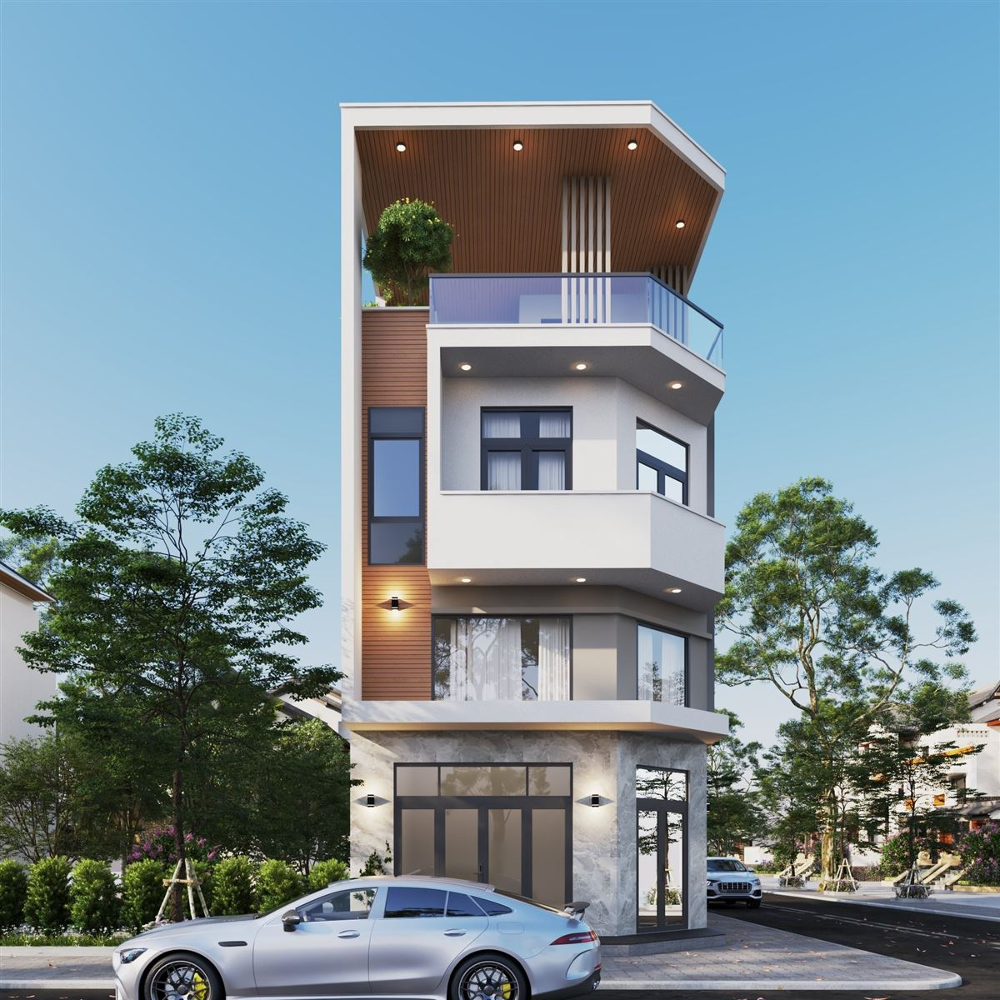
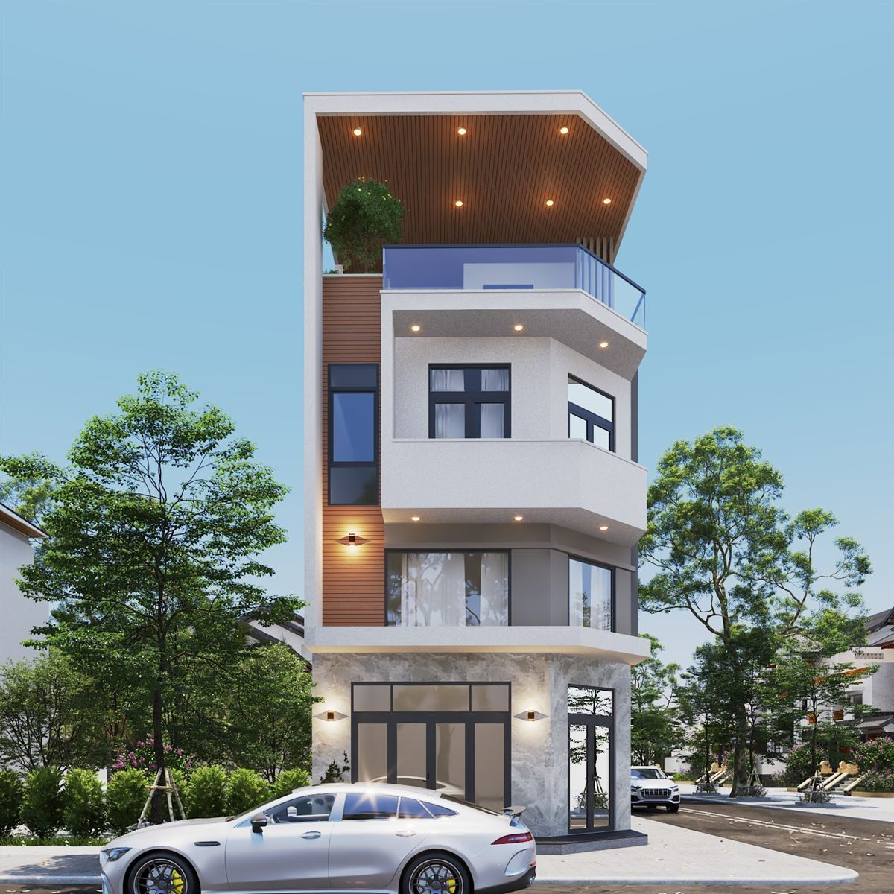
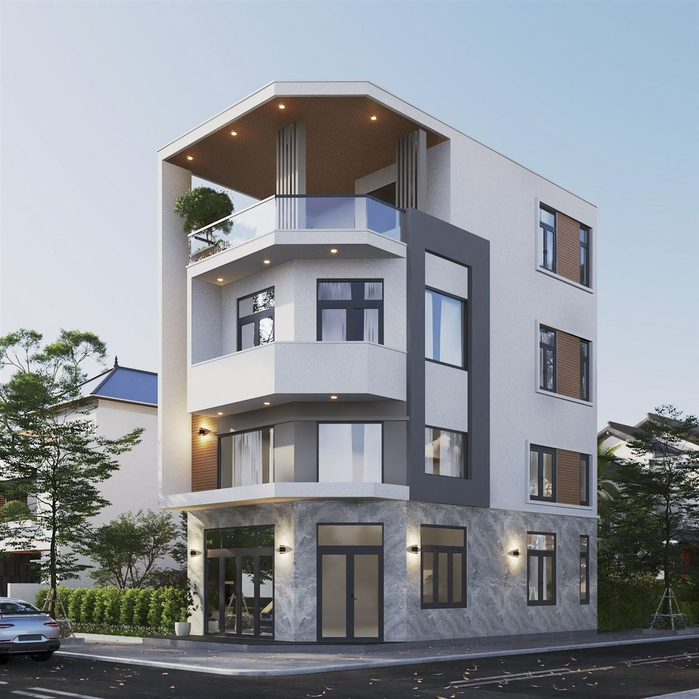
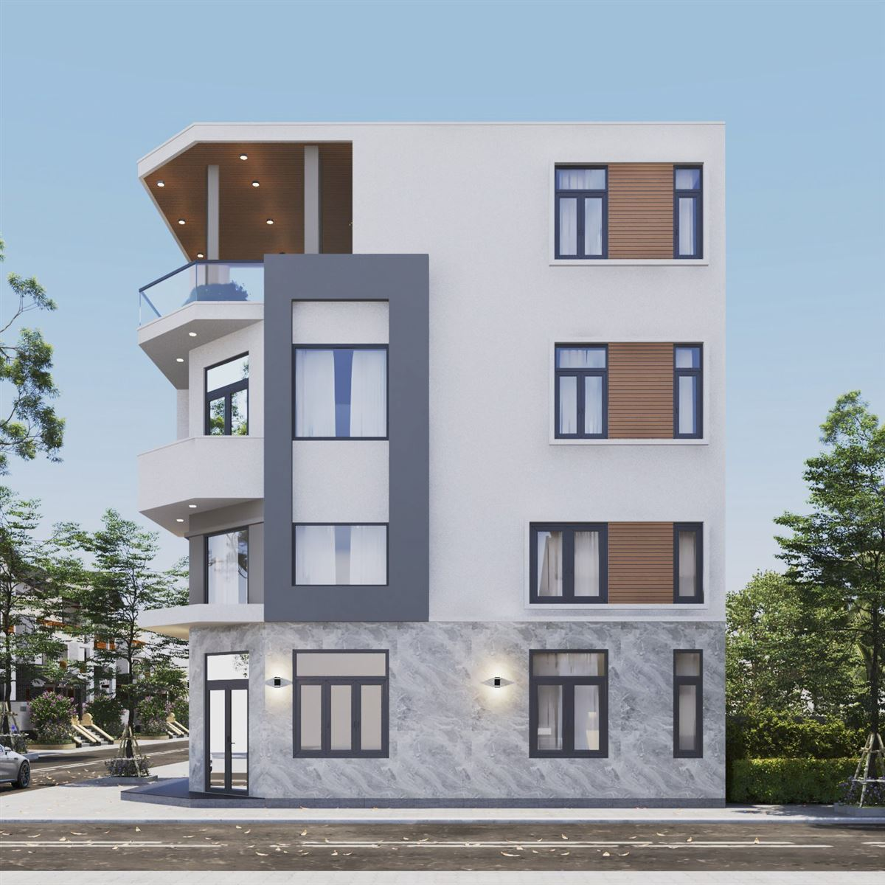

Mẫu nhà phố góc 2 mặt tiền hiện đại, ban công vát góc, ốp đá tầng trệt
Với lô đất ở góc đường, chủ nhà có hai mặt nhìn ra ngoài, nên cả hai đều cần được chăm chút. Mẫu nhà phố góc 2 mặt tiền trong bài là phối cảnh 3D của Đại Phát Decor, có tầng trệt ốp đá, các tầng trên vát ở góc và mảng trần màu gỗ trên cùng. Bài viết phân tích từng mặt để anh chị dễ hình dung cách xử lý một căn nhà góc.

Mẫu nhà phố góc 2 mặt tiền xử lý góc nhà thế nào?
Phần đáng chú ý nhất là góc nhà. Thay vì để cạnh vuông, các tầng trên được vát góc, có lan can kính ở trên cùng và đèn âm dưới mỗi bản sàn nhô ra. Khi đi tới từ xa, người nhìn thấy góc nhà trước, nên cách vát này giúp khối nhà bớt cứng và dễ nhận ra.
Trên đỉnh góc, khung tường trắng ôm một mảng trần màu gỗ cùng vài đèn âm trần. Mảng này đóng vai trò như phần kết của căn nhà, đồng thời che một khoảng sân có lan can kính và cây xanh phía dưới.

Mặt đứng: mảng xám, gỗ và cửa sổ
Mặt bên giữ nền tường trắng, các ô cửa sổ khung đen xếp thẳng hàng theo tầng. Xen giữa các ô là mảng màu nâu gỗ, nên mặt tường dài không bị đơn điệu. Ở mặt còn lại có một khung xám đứng chạy suốt nhiều tầng, ôm lấy dải cửa kính. Khung này tạo đường thẳng đứng đối lập với các bản sàn vát ở góc, làm mặt đứng có nhịp rõ.
Trên phối cảnh có thể đếm được một tầng trệt và các tầng phía trên, cùng phần mái che trên đỉnh. Tuy vậy, số tầng thật của từng công trình nên căn cứ theo đất và quy định xây dựng tại nơi xây, không nên lấy cứng từ ảnh.

Tầng trệt ốp đá và cửa kính lớn
Tầng trệt được ốp đá vân màu sáng ở phần tường, kèm cửa kính cao và đèn tường đặt giữa các ô cửa. So với các tầng trên sơn trắng, phần đá này tạo cảm giác chân nhà chắc hơn. Hàng cửa kính mở ra hai phía nên tầng trệt có thể nhận nhiều ánh sáng và thuận tiện nếu gia đình cần một không gian hướng ra đường.
Khi thi công, phần ốp đá ở chân nhà nên có chi tiết chống thấm và cách xử lý mép rõ trong bản vẽ, vì đây là chỗ dễ bám bẩn và thường bị nước mưa bắn lên. Với nhà góc, vị trí bảng điện, cục nóng máy lạnh và ống thoát cũng nên tính trước, để không lộ ra ở mặt đường.


Khi làm nhà góc, cần chuẩn bị gì?
- Đo đúng kích thước đất, ghi rõ hai cạnh giáp đường và hướng của từng mặt.
- Xác định mặt chính, nơi đặt cửa vào và chỗ để xe.
- Kiểm tra quy định về khoảng lùi, ban công và chiều cao tại địa phương.
- Chốt mặt bằng trước, rồi mới chỉnh hình khối và vật liệu mặt tiền.
Bài chỉ phân tích phần hình ảnh bên ngoài, nên diện tích và chi phí phải tính theo đất thật. Anh chị có thể xem thêm cách tính chi phí thiết kế trên trang chủ.
Câu hỏi thường gặp
Nhà phố góc khác nhà phố thường ở điểm nào?
Nhà góc có hai mặt nhìn ra đường, nên cả hai mặt đều cần được thiết kế và có thêm cơ hội lấy sáng, thông gió. Cần kiểm tra quy định xây dựng tại địa phương cho từng lô đất.
Mẫu này có làm kinh doanh ở tầng trệt được không?
Có thể cân nhắc vì tầng trệt có nhiều cửa kính nhìn ra đường. Tuy nhiên công năng thật phải chốt trên mặt bằng theo nhu cầu của từng gia đình.
Cần gì để được tư vấn mẫu nhà góc?
Anh chị gửi kích thước đất, hai hướng đường, số tầng và nhu cầu qua Zalo 0979 597 679 để được tư vấn và báo giá.
Xem thêm các mẫu khác
- Thiết kế nhà cấp 4 mái thái có sân trước, tường rào hoa gió
- Mẫu biệt thự 2 tầng hiện đại mái dốc, giàn gỗ
- Dịch vụ thiết kế nhà phố, nhà cấp 4, biệt thự của Đại Phát Decor
Đang có lô đất góc?
Gửi kích thước đất và mong muốn, Đại Phát Decor sẽ trao đổi phương án và báo giá.